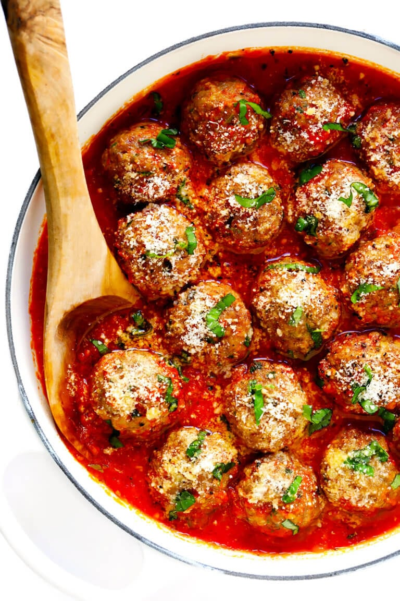

Meatballs

Great for pasta's, sandwiches, you name it!
Ingredients
- 1 cup Panko breadcrumbs
- 1/3 cup milk
- 1 pound ground beef
- 1 pound ground pork
- 4 cloves garlic, pressed or minced
- 2 eggs
- 1 cup (1 1/2 ounces) finely-grated Parmesan cheese
- 1/4 cup finely-chopped fresh Italian herbs (I used half
parsley, half basil)
- 1/4 cup grated yellow onion
- 2 teaspoons Worcestershire sauce
- 1 teaspoon dried oregano
- 1 teaspoon fine sea salt
- 1/2 teaspoon black pepper
- 1/4 teaspoon crushed red pepper flakes
Cooking Instructions
- Make the panade. In a large mixing bowl, stir together the
panko and milk until combined. Set mixture aside to soak for
5 to 10 minutes while you prepare the other ingredients.
- Combine remaining ingredients. Add the ground beef, ground
pork, garlic, eggs, Parmesan, fresh herbs, onion and
Worcestershire sauce to the (same) mixing bowl. Sprinkle the
oregano, salt, black pepper and crushed red pepper flakes
evenly on top. Use your hands to mix the ingredients until
evenly combined, being careful not to over-mix the
ingredients.
- Chill (optional step). To make the meatballs easier to form,
I recommend covering and chilling the mixture in the
refrigerator for 1 hour. But if you’re pressed for time, you
can skip this step.
- Prep oven and baking sheet. Heat the oven to 425°F and line
a large rimmed baking sheet with parchment paper.
- Form the meatballs. Using a medium cookie scoop or a spoon,
scoop and roll the mixture into 2-tablespoon balls and place
them on the prepared baking sheet. (I recommend greasing
your hands with a bit of olive oil to prevent the mixture
from sticking.)
- Bake. Bake for 10-12 minutes, or until an instant-read
thermometer measures the internal temperature of the
meatballs to be 160°F. Remove pan and transfer to a wire
cooling rack.
- Serve. Serve meatballs immediately and enjoy!